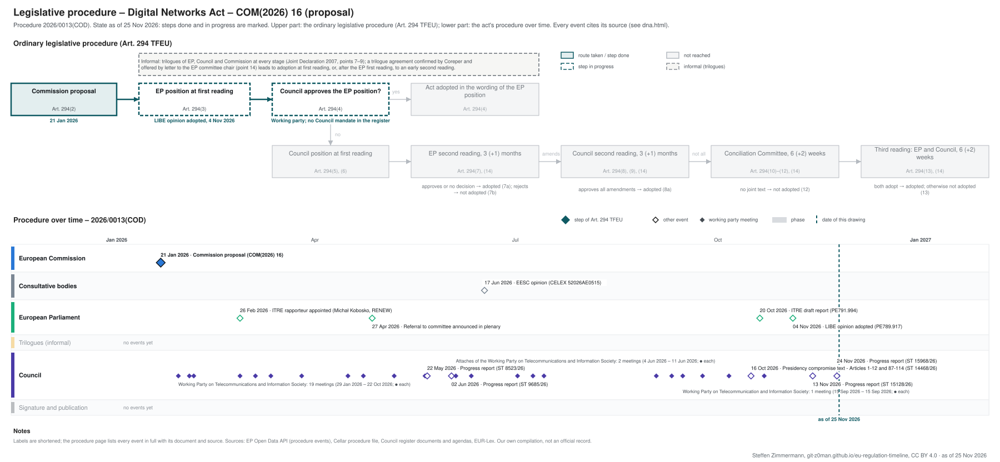

Regulations › Digital Networks Act › Legislative procedure · All ongoing procedures
Digital Networks Act – COM(2026) 16 (proposal)
Procedure 2026/0013(COD), ongoing, as of 26 Nov 2026. Procedure drawing (PNG, SVG, PDF, draw.io, slide 16:9) · Page as Markdown: dna.md
| Stage | EP committee stage |
|---|---|
| Parliament | draft report 20 Oct 2026 |
| Council | working party, latest document 24 Nov 2026 |
| Latest activity | 24 Nov 2026 · Council: Progress report (ST 15968/26) |
| Next steps | EP: amendments and committee vote on the report and mandate; Council: working party towards a negotiating mandate |
| Forecast | Official Journal around Jun 2028 median; half of the runs Dec 2027 – Nov 2028 On track · Next step: EP committee vote. On track until 26 Apr 2027 (if it came later, the expected publication would move). If it came today: publication around Dec 2027. |
Documents
Newest first; what the status means is below the table.
| Date | Document | Kind | Subject | Status | Access | Released | Text |
|---|---|---|---|---|---|---|---|
| 24 Nov 2026 | ST 15968/26 | Council: progress report | Progress report | public | – | – | en |
| 13 Nov 2026 | ST 15128/26 | Council: progress report | Progress report | public | – | – | en |
| 12 Nov 2026 | ST 15800/26 | Council note | Opinion of the European Committee of the Regions | public | – | – | – |
| 6 Nov 2026 | PE789.917 | EP opinion | Opinion on the proposal for a regulation of the European Parliament and of the Council on digital networks, amending Regulation (EU) 2015/2120, Directive … | public | – | – | – |
| 20 Oct 2026 | PE791.994 | EP draft report (rapporteur) | DRAFT REPORT on the proposal for a regulation of the European Parliament and of the Council on digital networks, amending Regulation (EU) 2015/2120, Directive … | public | – | – | en de |
| 16 Oct 2026 | ST 14468/26 | Council: Presidency compromise text | Presidency compromise text - Articles 1-12 and 87-114 | public | – | – | en |
| 6 Oct 2026 | WK 15472/26 | Council note | Digital Networks Act - Part VII Governance: Presentation | not public* | – | – | – |
| 15 Sep 2026 | WK 14079/26 | Council note | Digital Networks Act - presentation - TELECOM WP on 15 September | not public* | – | – | – |
| 14 Sep 2026 | WK 14040/26 | Council note | Digital Networks Act - CWP Access presentation | public | – | – | – |
| 9 Sep 2026 | WK 13774/26 | Council note | Digital Networks Act: PART V – TITLE I: Transition to fibre networks - presentation | not public* | – | – | – |
| 14 Jul 2026 | WK 10597/26 | Council note | Digital Networks Act - Articles 29 - 35 & Annex VI: Presentation | not public* | – | – | – |
| 13 Jul 2026 | ST 11861/26 | Council note | Opinion on the application of the Principles of Subsidiarity and Proportionality - Cover note from the Senate of Romania | not public* | – | – | – |
| 13 Jul 2026 | ST 11871/26 | Council note | Opinion on the application of the Principles of Subsidiarity and Proportionality - Cover note from the Italian Senate | not public* | – | – | – |
| 10 Jul 2026 | WK 10407/26 | Council note | Digital Networks Act - Articles 17 -28: Presentation | not public* | – | – | – |
| 23 Jun 2026 | ST 11014/26 | Council note | Opinion of the European Economic and Social Committee (EESC) | public | – | – | – |
| 22 Jun 2026 | ST 10910/26 | Council note | Opinion on the application of the Principles of Subsidiarity and Proportionality - 2026/0013 COD - Cover note from the Portuguese Parliament (Assembleia da … | not public* | – | – | – |
| 22 Jun 2026 | ST 10912/26 | Council note | Opinion on the application of the Principles of Subsidiarity and Proportionality - 2026/0013 COD - Cover note from the Italian Chamber of Deputies | not public* | – | – | – |
| 22 Jun 2026 | ST 10913/26 | Council note | Cover note from the French Senate | not public* | – | – | – |
| 17 Jun 2026 | CELEX 52026AE0515 | Opinion | Opinion of the European Economic and Social Committee – Proposal for a Regulation of the European Parliament and of the Council on digital networks, amending … | public | – | – | – |
| 11 Jun 2026 | WK 8428/26 | Council note | Digital Networks Act-Terrestrial spectrum: Presentation | not public* | – | – | – |
| 2 Jun 2026 | ST 9685/26 | Council: progress report | Progress report Our summary: Note of the General Secretariat of the Council of 2 June 2026 transmitting to the Council the Presidency's progress report on the Digital Networks Act proposal, which the Council is invited to take note of; it changes no provision and is not a Council position. Its account of the discussions is the same as in the Presidency's report to the Permanent Representatives Committee of 22 May 2026 (ST 8523/26): Commission presentations and workshops from January to March 2026 and a first article-by-article reading of Parts I, II, III and VI, Part IV Title III and Part VIII, with questions on harmonisation against national flexibility, implementing acts and BEREC guidelines, the Single Passport and the relationship of the resilience rules with NIS-2. Only the header and the conclusion differ, and the report still says nothing about the cybersecurity and supply chain security condition of the general authorisation. | public | – | – | en de |
| 28 May 2026 | WK 7641/26 | Council note | Comments from Austria | not public* | Request ↗ | – | – |
| 27 May 2026 | WK 7512/26 | Council note | Comments from Germany | public | – | – | – |
| 27 May 2026 | WK 7513/26 | Council note | Comments from France | public | – | – | – |
| 26 May 2026 | WK 7366/26 | Council note | Comments from Spain | not public* | Request ↗ | – | – |
| 26 May 2026 | WK 7369/26 | Council note | Comments from Slovenia | not public* | Request ↗ | – | – |
| 26 May 2026 | WK 7370/26 | Council note | Comments from Croatia | not public* | Request ↗ | – | – |
| 26 May 2026 | WK 7372/26 | Council note | Comments from Italy | public | – | – | – |
| 26 May 2026 | WK 7373/26 | Council note | Comments from Poland | not public* | Request ↗ | – | – |
| 26 May 2026 | WK 7374/26 | Council note | Comments from Finland | not public* | Request ↗ | – | – |
| 26 May 2026 | WK 7375/26 | Council note | Comments from Luxembourg | not public* | Request ↗ | – | – |
| 26 May 2026 | WK 7402/26 | Council note | Comments from Greece | not public* | Request ↗ | – | – |
| 26 May 2026 | WK 7404/26 | Council note | Comments from the Czech Republic | not public* | Request ↗ | – | – |
| 26 May 2026 | WK 7426/26 | Council note | Comments from Hungary | not public* | Request ↗ | – | – |
| 26 May 2026 | WK 7430/26 | Council note | Comments from Lithuania | not public* | Request ↗ | – | – |
| 22 May 2026 | ST 8523/26 | Council: progress report | Progress report Our summary: Progress report of the Cyprus Presidency of 22 May 2026 on the Digital Networks Act proposal, sent to the Permanent Representatives Committee to take note of before the Telecommunications Council of 9 June 2026; it changes no provision and is not a Council position. It records Commission presentations and workshops from January to March 2026 and a first article-by-article reading of Parts I, II, III and VI, Part IV Title III and Part VIII, with delegations asking for clarifications on harmonisation against national flexibility, the reliance on implementing acts and BEREC guidelines, the design of the Single Passport and the relationship of the resilience rules with NIS-2. It says nothing about the cybersecurity and supply chain security condition of the general authorisation, and the report assigns no reservation to a named Member State. Updated 27 Nov 2026: Decided point applied (rule, r1): in the section on the machinery builder, the point that a machinery manufacturer is reached only as a provider of networks or services is marked plausible instead of established, and adds that Art. 20(1)-(2)(d) of the Commission proposal may reach undertakings using radio spectrum under general authorisation, such as operators of private networks. (source: ST 8523/26) | public | – | – | en |
| 22 May 2026 | ST 9599/26 | Council note | Opinion on the application of the Principles of Subsidiarity and Proportionality - Cover note from the Chamber of Deputies of the Czech Republic | not public* | – | – | – |
| 22 May 2026 | WK 7263/26 | Council note | Digital Networks Act: Presentation | not public* | – | – | – |
| 22 May 2026 | WK 7310/26 | Council note | Comments from Denmark | not public* | Request ↗ | – | – |
| 22 May 2026 | WK 7339/26 | Council note | Comments from Belgium | not public* | Request ↗ | – | – |
| 22 May 2026 | WK 7343/26 | Council note | Comments from Sweden | not public* | Request ↗ | – | – |
| 21 May 2026 | WK 7157/26 | Council note | Comments from Bulgaria | not public* | Request ↗ | – | – |
| 18 May 2026 | WK 6934/26 | Council note | Comments from Malta | not public* | Request ↗ | – | – |
| 18 May 2026 | WK 6936/26 | Council note | Comments from Slovakia | not public* | Request ↗ | – | – |
| 18 May 2026 | WK 6943/26 | Council note | Comments from Latvia | not public* | Request ↗ | – | – |
| 18 May 2026 | WK 6963/26 | Council note | Comments from Portugal | not public* | Request ↗ | – | – |
| 18 May 2026 | WK 6964/26 | Council note | Comments from the Netherlands | not public* | Request ↗ | – | – |
| 18 May 2026 | WK 6965/26 | Council note | Comments from Estonia | not public* | Request ↗ | – | – |
| 8 May 2026 | WK 6569/26 | Council note | Digital Networks Act Part VIII - General and Final provisions: Presentation | not public* | – | – | – |
| 8 May 2026 | WK 6570/26 | Council note | EU Action Plan on Drone and Counter-drone Security: Presentation | not public* | – | – | – |
| 27 Apr 2026 | WK 6030/26 | Council note | General authorisation-Single passporting: Presentation | not public* | – | – | – |
| 13 Mar 2026 | WK 4034/26 | Council note | Digital Networks Act: Part VI - Services: Presentation | public | – | – | – |
| 5 Mar 2026 | WK 3672/26 | Council note | Digital Networks Act: Presentation | public | – | – | – |
| 3 Mar 2026 | WK 3472/26 | Council note | Digital Networks Act | public | – | – | – |
| 3 Feb 2026 | WK 1793/26 | Council note | Presentation of the Digital Networks Act | not public* | – | – | – |
| 30 Jan 2026 | WK 1501/26 | Council note | Impact Assessment on Digital Networks Act | not public* | – | – | – |
| 22 Jan 2026 | ST 5600/26 | Council: transmission note | Proposal for a Regulation of the European Parliament and of the Council on digital networks, amending Regulation (EU) 2015/2120, Directive 2002/58/EC and … | public | – | – | – |
| 22 Jan 2026 | ST 5600/26 ADD 1 | Council: transmission note | Annex to the Proposal for a Regulation of the European Parliament and of the Council on digital networks, amending Regulation (EU) 2015/2120, Directive … | public | – | – | – |
| 22 Jan 2026 | ST 5600/26 ADD 2 | Council: transmission note | PART 1/3 Commission staff working document impact assessment report Accompanying the document Proposal for a Regulation of the European Parliament and of the … | public | – | – | – |
| 22 Jan 2026 | ST 5600/26 ADD 3 | Council: transmission note | PART 2/3 Commission staff working document impact assessment report Accompanying the document Proposal for a Regulation of the European Parliament and of the … | public | – | – | – |
| 22 Jan 2026 | ST 5600/26 ADD 4 | Council: transmission note | PART 3/3 Commission staff working document impact assessment report Accompanying the document Proposal for a Regulation of the European Parliament and of the … | public | – | – | – |
| 22 Jan 2026 | ST 5600/26 ADD 5 | Council: transmission note | Commission staff working document executive summary of the impact assessment report Accompanying the document Proposal for a Regulation of the European … | public | – | – | – |
| 22 Jan 2026 | ST 5600/26 ADD 6 | Council: transmission note | Regulatory scrutiny board opinion Digital Networks Act | public | – | – | – |
Every document the Council register, the EU database of the Parliament of Austria or the EP lists for the procedure, with its state: public documents link to the official file; documents that are not public link to their entry in the Austrian database where there is one (metadata only). Status: public; not public; not public, leak available (an unofficial copy is known to circulate outside the institutions; it is neither published nor quoted here). Released: when a document listed as not public was released, by the date of the Council's public PDF (a technical date) or else the day our daily check found it public. Access, our estimate for a Council document that is not public: Request opens a prefilled request on AsktheEU, which the reader sends under their own name and which is then public there; Request running links a request already made there for the document, with its state (a reply not yet classified by the requester can be the institution's automatic receipt), and a finished one shows its outcome (e.g. Request rejected); Release expected gives the day by which this register usually releases such a document; – means nothing to ask for (public, or no position text).
* Not public: the registers are checked again daily until the document is released; last check 27 Nov 2026.
Events
Newest first.
| Date | Actor | Event | Document | Source |
|---|---|---|---|---|
| 24 Nov 2026 | Council | Progress report | ST 15968/26 · en.md | Parliament of Austria, EU database (interinstitutional file 2026/0013(COD)) |
| 13 Nov 2026 | Council | Progress report | ST 15128/26 · en.md | Cellar procedure file 2026/13 (Council register) |
| 4 Nov 2026 | European Parliament | LIBE opinion adopted | PE789.917 | EP Open Data API, procedure 2026-0013 (committee adopting opinion) |
| 22 Oct 2026 | Council | Working Party on Telecommunications and Information Society: Digital Networks Act Scope, Objectives and … | CM 4581/26 | Council register, CM 4581/26 (notice of meeting and provisional agenda) |
| 20 Oct 2026 | European Parliament | ITRE draft report | PE791.994 · en.md de.md | EP Open Data API, procedure 2026-0013 (committee tabling report) |
| 16 Oct 2026 | Council | Presidency compromise text - Articles 1-12 and 87-114 | ST 14468/26 · en.md | Parliament of Austria, EU database (interinstitutional file 2026/0013(COD)) |
| 6 Oct 2026 | Council | Working Party on Telecommunications and Information Society: Digital Networks Act – Part VII Governance a) b) … | CM 4451/26 | Council register, CM 4451/26 (notice of meeting and provisional agenda) |
| 24 Sep 2026 | Council | Working Party on Telecommunications and Information Society: Digital Networks Act – Part V – Title IV: … | CM 3966/26 | Council register, CM 3966/26 (notice of meeting and provisional agenda) |
| 15 Sep 2026 | Council | Working Party on Telecommunication and Information Society: Digital Networks Act – Part V – Articles 77-79 … | CM 3962/26 | Council register, CM 3962/26 (notice of meeting and provisional agenda) |
| 10 Sep 2026 | Council | Working Party on Telecommunications and Information Society: Digital Networks Act – Part V – continuation of … | CM 3956/26 | Council register, CM 3956/26 (notice of meeting and provisional agenda) |
| 3 Sep 2026 | Council | Working Party on Telecommunications and Information Society: Digital Networks Act – Part V transition to … | CM 3876/26 | Council register, CM 3876/26 (notice of meeting and provisional agenda) |
| 14 Jul 2026 | Council | Working Party on Telecommunications and Information Society: Digital Networks Act – Radio Spectrum Articles … | CM 3596/26 REV 1 | Council register, CM 3596/26 REV 1 (notice of meeting and provisional agenda) |
| 9 Jul 2026 | Council | Working Party on Telecommunications and Information Society: Digital Networks Act – Radio Spectrum Articles … | CM 3509/26 | Council register, CM 3509/26 (notice of meeting and provisional agenda) |
| 2 Jul 2026 | Council | Working Party on Telecommunications and Information Society: (poss.) Digital Networks Act – Radio Spectrum … | CM 3440/26 | Council register, CM 3440/26 (notice of meeting and provisional agenda) |
| 17 Jun 2026 | Consultative bodies | EESC opinion | CELEX 52026AE0515 | Cellar procedure file 2026/13 |
| 11 Jun 2026 | Council | Attaches of the Working Party on Telecommunications and Information Society: Digital Networks Act Part IV, … | CM 3136/26 | Council register, CM 3136/26 (notice of meeting and provisional agenda) |
| 4 Jun 2026 | Council | Attaches of the Working Party on Telecommunications and Information Society: Digital Networks Act Part IV, … | CM 3048/26 | Council register, CM 3048/26 (notice of meeting and provisional agenda) |
| 2 Jun 2026 | Council | Progress report | ST 9685/26 · en.md de.md | Cellar procedure file 2026/13 (Council register) |
| 22 May 2026 | Council | Progress report | ST 8523/26 · en.md | Cellar procedure file 2026/13 (Council register) |
| 21 May 2026 | Council | Working Party on Telecommunications and Information Society: Digital Networks Act a) Part III: General … | CM 2807/26 | Council register, CM 2807/26 (notice of meeting and provisional agenda) |
| 7 May 2026 | Council | Working Party on Telecommunications and Information Society: Digital Networks Act Examination of Articles … | CM 2603/26 REV 1 | Council register, CM 2603/26 REV 1 (notice of meeting and provisional agenda) |
| 27 Apr 2026 | European Parliament | Referral to committee announced in plenary | EP procedure file | EP Open Data API, procedure 2026-0013 (referral) |
| 23 Apr 2026 | Council | Working Party on Telecommunications and Information Society: Digital Networks Act a) Deep dive on the … | CM 2375/26 | Council register, CM 2375/26 (notice of meeting and provisional agenda) |
| 16 Apr 2026 | Council | Working Party on Telecommunications and Information Society: Digital Networks Act Part VI – Services: Title … | CM 2263/26 REV 1 | Council register, CM 2263/26 REV 1 (notice of meeting and provisional agenda) |
| 26 Mar 2026 | Council | Working Party on Telecommunications and Information Society: Digital Networks Act Part VI – Services: Title … | CM 1989/26 REV 2 | Council register, CM 1989/26 REV 2 (notice of meeting and provisional agenda) |
| 12 Mar 2026 | Council | Working Party on Telecommunications and Information Society: Digital Networks Act Part VI – Services a) b) c) … | CM 1844/26 REV 2 | Council register, CM 1844/26 REV 2 (notice of meeting and provisional agenda) |
| 5 Mar 2026 | Council | Working Party on Telecommunications and Information Society: Digital Networks Act a) b) – Part I – Scope, … | CM 1766/26 | Council register, CM 1766/26 (notice of meeting and provisional agenda) |
| 26 Feb 2026 | Council | Working Party on Telecommunications and Information Society: Digital Networks Act (part III) – Presentation … | CM 1690/26 | Council register, CM 1690/26 (notice of meeting and provisional agenda) |
| 26 Feb 2026 | European Parliament | ITRE rapporteur appointed (Michał Kobosko, RENEW) | EP procedure file | EP Open Data API, procedure 2026-0013 (participation RAPPORTEUR) |
| 5 Feb 2026 | Council | Working Party on Telecommunications and Information Society: Digital Networks Act (DNA) – Information from … | CM 1365/26 REV 1 | Council register, CM 1365/26 REV 1 (notice of meeting and provisional agenda) |
| 3 Feb 2026 | Council | Working Party on Telecommunications and Information Society: Digital Networks Act (DNA) Information from the … | CM 1364/26 | Council register, CM 1364/26 (notice of meeting and provisional agenda) |
| 29 Jan 2026 | Council | Working Party on Telecommunications and Information Society: Digital Networks Act (DNA) – Impact Assessment … | CM 1221/26 REV 1 | Council register, CM 1221/26 REV 1 (notice of meeting and provisional agenda) |
| 21 Jan 2026 | European Commission | Commission proposal (Art. 294(2) TFEU) | COM(2026) 16 · en.md de.md | Cellar (CELEX 52026PC0016) |
Procedure drawing

Download: PNG · SVG · PDF · draw.io ·


European Parliament committees
| Committee | Role | Rapporteur | Shadow rapporteurs |
|---|---|---|---|
| ITRE Industry, Research and Energy | Responsible | Michał Kobosko (Renew), appointed 26 Feb 2026 | Pilar Del Castillo Vera (EPP), Matthias Ecke (S&D), Mélanie Disdier (PfE), Francesco Torselli (ECR), Damian Boeselager (Greens/EFA), Jussi Saramo (The Left) |
| IMCO Internal Market and Consumer Protection | Opinion | Stéphanie Yon-courtin (Renew), appointed 8 May 2026 | Adina Vălean (EPP), Alex Agius Saliba (S&D), Stefano Cavedagna (ECR), Alexandra Geese (Greens/EFA) |
| LIBE Civil Liberties, Justice and Home Affairs | Opinion | Ana Vasconcelos (Renew), appointed 2 Mar 2026 | Krzysztof Brejza (EPP), Evin Incir (S&D), Tom Vandendriessche (PfE), Jacek Ozdoba (ECR), Markéta Gregorová (Greens/EFA), Damien Carême (The Left) |
| BUDG Budgets | Budgetary assessment: decided not to give an opinion | – | – |
Source: EP Open Data API (participations) and the Legislative Observatory (joint committee, opinions declined); names link to each Member's page on the EP website. The API names no committee for shadow rapporteurs; they are assigned by the EP's order of participants, which groups each committee.
Texts as Markdown
Newest first. Unofficial Markdown conversions for reading, searching and project folders; only the official document is authentic. "Read" opens the rendered text on GitHub, where a link to a provision (#art-13, #rec-12, #annex-i) jumps to it.
| Date | Stage | Document | Markdown | Read |
|---|---|---|---|---|
| 24 Nov 2026 | Council: progress report | ST 15968/26 | en | GitHub |
| 13 Nov 2026 | Council: progress report | ST 15128/26 | en | GitHub |
| 20 Oct 2026 | EP draft report (rapporteur) | PE791.994 | en de | GitHub |
| 16 Oct 2026 | Council: Presidency compromise text | ST 14468/26 | en | GitHub |
| 2 Jun 2026 | Council: progress report | ST 9685/26 | en de | GitHub |
| 22 May 2026 | Council: progress report | ST 8523/26 | en | GitHub |
| 21 Jan 2026 | Commission proposal | CELEX 52026PC0016 | en de | GitHub |